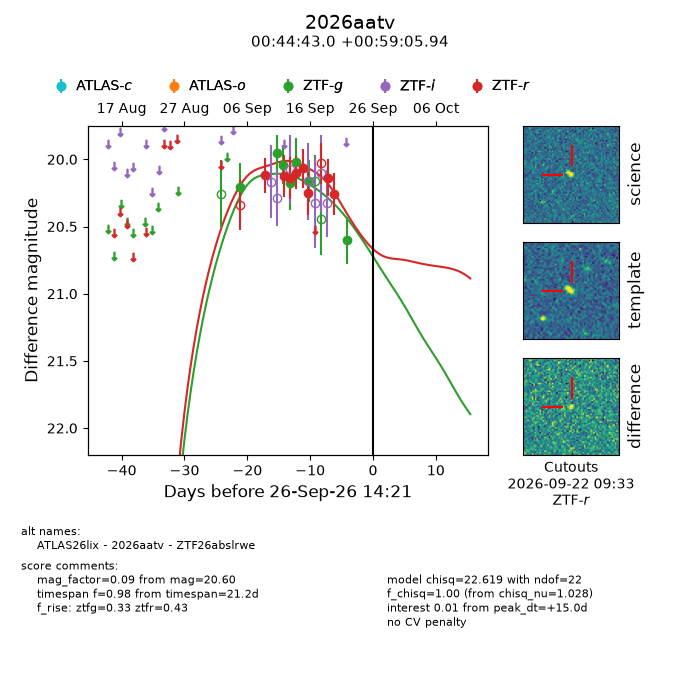
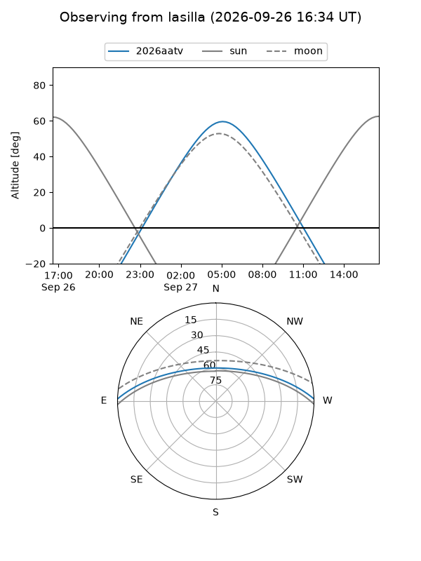
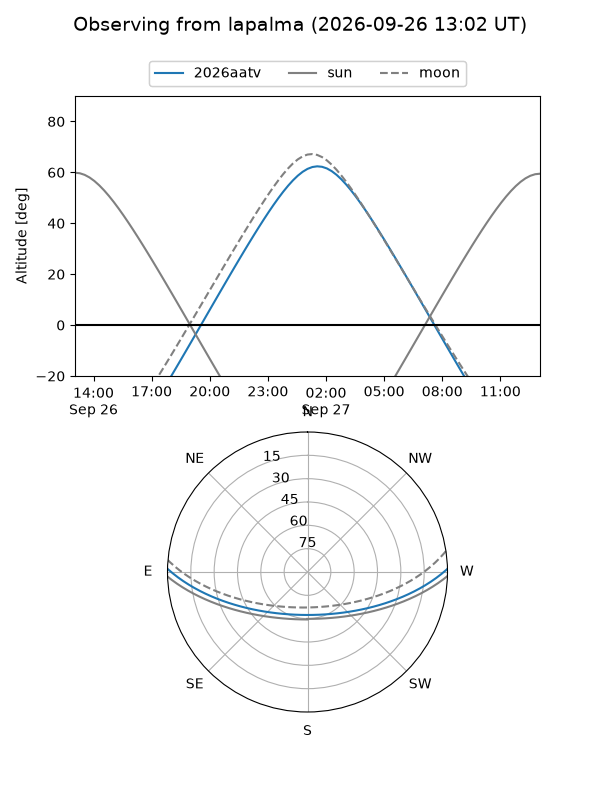
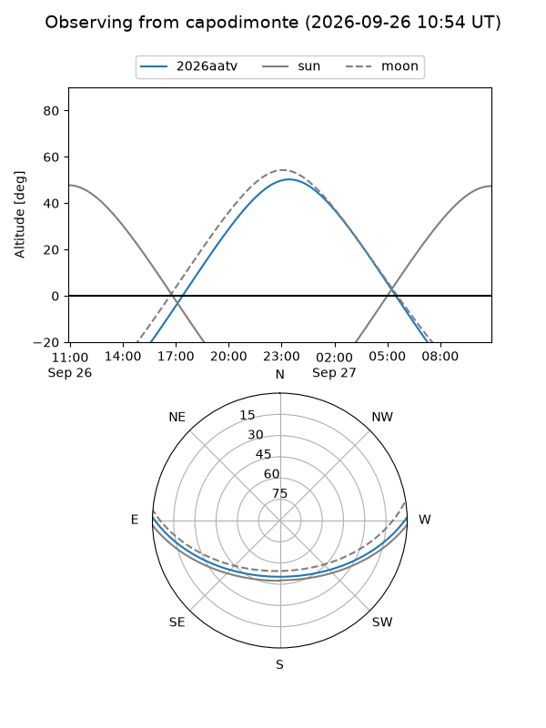
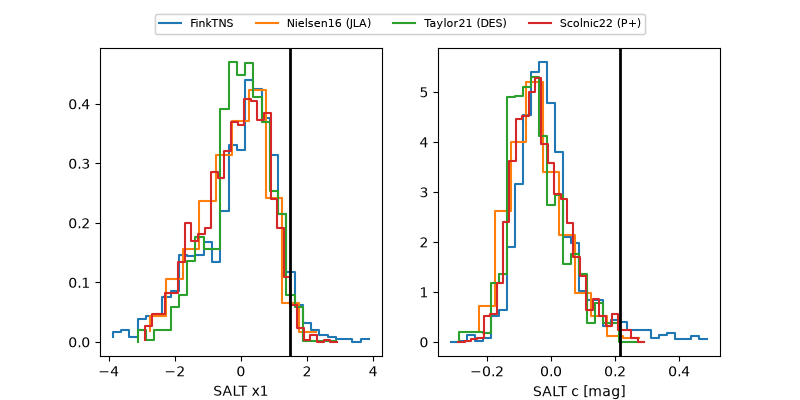

2026aatv
Target 2026aatv at 2026-09-26 14:23
Aliases and brokers:
FINK-ZTF: ztf.fink-portal.org/ZTF26abslrwe
Lasair-ZTF: lasair-ztf.lsst.ac.uk/objects/ZTF26abslrwe
ALeRCE-ZTF: alerce.online/object/ZTF26abslrwe
YSE-PZ: ziggy.ucolick.org/yse/transient_detail/2026aatv
TNS name: wis-tns.org/object/2026aatv
Direct TNS query: direct search
alt names
ZTF26abslrwe (ztf,fink_ztf)
2026aatv (tns,yse)
ATLAS26lix (atlas)
Coordinates:
equatorial (ra, dec) = 11.1793,+0.98498
equatorial (HMS+DMS) = 00:44:43.03,+00:59:05.94
galactic (l, b) = (119.3704,-61.84028)
Flags:
TNS type: nan
peak dt: +15.0
Photometry:
last ztfg=20.60, ztfr=20.26
7 ztfg, 8 ztfr detections
Lightcurve

Visibility



Additional plots
